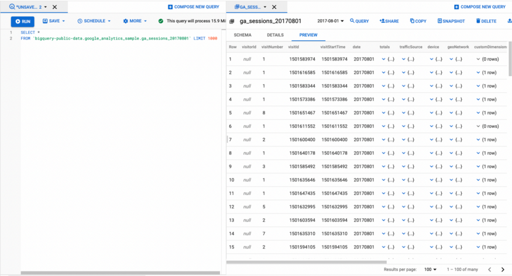
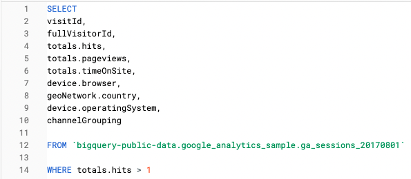
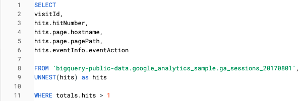

37 Google, Analytics, Reports
Notes from
TOC
- Misc
- Terms
- Segments, Dimensions, and Metrics
- Reports
- Reports Snapshot
- Realtime
- Lifecycle
- Acquisition
- user, traffic
- Engagement
- events, conversions, page and screen
- Monetization
- in-app purchases, publisher ads
- Retention
- Acquisition
- User
- Demographics
- Tech Explore Free-form
- Funnel
- Path
- Segment overlap
- Cohort
- User lifetime
Misc
- In GA4, Google has deprioritized the concept of a session and tracking sessions in favour of user and event-based metrics
- Variables are divided into Segments (filters), Dimensions (group_bys), and Metrics (calculated values)
- See Docs in Reports >> Lifecycle >> Monetization for details, links on how tag sites to get events data into GA4
- Differences between Reports and Explorations
- Reports are for monitoring key metrics. Explorations is for querying which allows you to drill down and answer questions. (i.e. EDA)
- Some dimensions and metrics available in reports aren’t supported in explorations
- Reports that use the aggregated data tables are always based on 100% of the available data. Explorations, on the other hand, may apply sampling when querying user and event level data if the size of your query exceeds 10 million events.
- Shortening the date range of the explorations can reduce the size of the population to which sampling is applied, resulting in higher accuracy.
- Might have slightly different results when running queries for the past 48 hours, due to processing time differences in different Analytics systems.
- Resources
- GA4 Dimensions and Metrics Docs
- Google API Dimensions and Metrics
- Google Analytics Glossary, Events Glossary, Metrics Glossary
- Google search for glossaries
- Channels, Sources, and Mediums Glossary
- Measure eCommerce - set up ecommerce events to collect information about the shopping behavior of your users
- Set up a purchase event - set up a purchase event on your website so you can measure when someone makes a purchase
- Not every metric can be combined with every dimension.
- Each dimension and metric has a scope: user-level, session-level, or hit-level.
- In most cases, it only makes sense to combine dimensions and metrics that share the same scope.
- Reference for valid pairs
- GA4 retains 2 months of data by default. You can adjust this by going to Admin >> Data Settings >> Data Retention
- The cross-channel last click attribution model is Google’s basic last-click attribution model with a slight twist: it excludes direct traffc (traffic that is unattributed) except when no other data is available.
- Google Analytics data in BigQuery (info for GA360 not GA4)
- GA4 Docs for exporting to BigQuery
- Note that the Big Query export table with Google Analytics data is a nested table at session level for GA360 and at the event level for GA4
- nested information contains actions and metrics for a specific customer within a session
- Example: query for session level features
- Example: unnested query for hit level features
Terms
- Cohort - group of users who share a common characteristic identified by an Analytics dimension
- Dimension - categorical value; category to group_by in the calculation of a metric
- e.g. sesssions per country where country is the dimension
- Engagement
- User engagement is the length of time that your app is in the foreground or webpage is in focus so you can understand the time that users spend engaged with your content.
- Engaged sessions are sessions that last 10 seconds or longer, have one or more conversion events, or have two or more views
- “First User” - naming convention for acquisition attributes of a user (aka a first time user). There is no “first user” dimension. It’s a prefix that describes dimensions that measure how the website first acquires a user. These values don’t change when a user returns to your app or website.
- Interaction - any touch point with an element on a website
- Medium: the general category of the source
- examples: organic search (organic, i.e. unpaid search), cost-per-click paid search (cpc, i.e. paid search), web referral (referral),
(custom medium), none (direct traffic). - ppc: pay-per-click
- referral: any traffic coming from another website that’s NOT Pay-Per-Click (PPC)/Cost-per-Thousand (CPM) (i.e. ads) or a search engine
- e.g. link in an article or video description on Facebook, TripAdvisor, etc.
- examples: organic search (organic, i.e. unpaid search), cost-per-click paid search (cpc, i.e. paid search), web referral (referral),
- Metric - numeric value; usually a count or calculated value like a rate or average that’s aggregated per dimension value
- e.g. average conversions per device where average conversion is the metric
- New Users - Users on your site or app for the first time
- anyone who doesn’t have both a Google Analytics cookie and Client ID from your site or App Instance ID from your app
- “(not set)” (docs) - Google Analytics will store a default (not set) value if the data isn’t accessible, isn’t being tracked properly, or for other reasons.
- Segments - website variables that you can filter the data in order to perform calculations on various user subgroups
Think the term comes from “customer segmentation”
-
- Also shows how to build custom segments
Types
- System - provided segments from Google
- Custom - you can edit, copy/paste system segments to build segments or create one from scratch
- Also see Analytics Solutions Gallery
- a free marketplace where Analytics users share segments and other solutions they’ve developed
- Also see Analytics Solutions Gallery
Scopes
.png)
A user can be involved in multiple sessions and a session can contain multiple hits
Users - People interact with your property (e.g., your website or app)
- Behavior across all sessions within the date range you’re using, up to 93 days
- e.g. all the goals users completed or all the revenue they generated (across all sessions) during the date range.
Sessions - Interactions by a single user are grouped into sessions.
- Behavior within a single session
- e.g. the goals that users completed during a session, or the amount of revenue they generated during a session.
Hits - Interactions during a session are referred to as hits. Hits include interactions like pageviews, events, and transactions.
- Behavior confined to a single action
- e.g. viewing a page or starting a video.
- Sequenced Segment - sequence-based segmentT
- Think this is primarily used to create funnels pre-GA4, but can still be used in the “Blank” or “Free Form” template of Explore
- See Segment Docs for pre-GA4
- Think this is primarily used to create funnels pre-GA4, but can still be used in the “Blank” or “Free Form” template of Explore
- Session - A single period of time a user is active on your site or app
- 2 methods for how a session can be ended:
- Time-based expiration:
- After 30 minutes of inactivity if someone is inactive on your website for over 30 minutes, then a new session will be reported if they perform another interaction, for example, viewing another page * This explains how in a Path Exploration (see below) there are paths that go from session_start to page_view to session_start (i.e. the user left the tab open because they had to do something else, and after 30 minutes came back and interacted with the web page)
- At midnight
- Campaign change:
- If a user arrives via one campaign, leaves, and then comes back via a different campaign.
- Time-based expiration:
- 2 methods for how a session can be ended:
- Source - the origin of your traffic, such as a search engine (for example, google) or a domain (example.com)
- Users - Returning users who have been processed by Analytics. Sometimes it’s Active Users.
- UTM - Urchin Traffic Monitor - used to identify marketing channels or results from ad campaigns
- e.g. http://yourwebsite.com/your-post-title/?utm_source=google
- utm code = string after “?”
- separate each UTM parameter with the ‘&’ sign.
- This person clicked a google ad to get to your site
- utm code = string after “?”
- Name comes from Urchin Tracker, a web analytics software that served as the base for Google Analytics.
- Google URL builder tool
- See article for me details, best practices, etc.
- Parameter types
- utm_source - traffic source (e.g. google, facebook, twitter, etc.)
- utm_medium - type of traffic source (e.g. CPC, email, social, referral, display, etc.)
- utm_campaign - campaign name, track the performance of a specific campaign
- utm___content - In case you have multiple links pointing to the same URL (such as an email with two CTA buttons), this code will help you track which link was clicked (e.g
utm_content=navlink) - utm_term - track which keyword term a website visitor came from. This parameter is specifically used for paid search ads. (e.g.
utm_term=growth+hacking+tactics)
- e.g. http://yourwebsite.com/your-post-title/?utm_source=google
Segments, Dimensions, and Metrics
- Segments:
- Misc
- Recommended segments
- each geo-region (e.g. state or county), each product, each product-page, each source-medium (e.g. newsletter)
- Useful to compare segments
- e.g. compare the behavior differences between “visitors that stayed longer than 5 minutes” on your website and “visitors that stayed less than 1 minute.”
- can apply up to four segments at a time to any report
- maximum date range of 93 days to your reports
- Segments based on the Date of First Session option are limited to maximum range of 31 days
- reports are on only the first 1000 sessions for each user.
- counts beyond 1000 in a 93-day period are usually an indication of non-human traffic
- Do not use segments with Multi-Channel Funnel reports. Use Conversion segments instead.
- Google Ads cost data is not compatible with segments. If you apply a segment to a Google Ads report that includes cost data, then the cost data all have zero values.
- Recommended segments
- Misc
- Dimensions:
- Any event: the user has at least 1 event within the exploration time period.
- Any transaction: the user has at least 1 transaction event within the exploration time period,
- Any conversion: the user has at least 1 conversion event within the exploration time period.
- Event Category - something that describes the group of event actions and event labels
- Event Action - e.g. button click, image hover, tap, etc.
- Event Label - name of a product, navbar, sign-up form, etc.
- First Touch (acquisition date): the first time the user visited your app or website, as measured by this Google Analytics property.
- First user medium - The medium by which the user was first acquired, based on the Cross-channel last click attribution model (see Misc).
- First open - when a user opens the app for the first time
- Find out how many users have installed your app
- First Visit (app, web) - the first time a user visits a website
- Mobile Traffic - users that use a mobile device to visit your site
- find out if the ‘time on page’ is what it should be as this might say something about the mobile friendliness of your site
- Organic Traffic - all visitors that came from an organic search result to your site
- useful for finding which landing pages these users visit
- Session Medium - The medium that initiated a session on your website or app (i.e. current “last touch” for that user; see First Touch for contrast)
- Metrics:
- Active Users - number of unique users who performed sessions on your website within the exploration time frame
- Seems to be a smaller number than “total users”
- a user who has an engaged session or when Analytics collects:
- the first_visit event or engagement_time_msec parameter from a website
- the first_open event or engagement_time_msec parameter from an Android app
- the first_open or user_engagement event from an iOS app
- Average Click Rate - average number of times an element is interacted with, within a session
- Used to understand pain points
- If an element that should only be clicked once or twice has a high number of avg. clicks this can be an indication of either the user becoming stuck or clicking out of frustration.
- Avg CR = Total Events / Unique Dimension Combinations (see Example 6)
- Used to understand pain points
- Average Engagement Time - sum of user engagement durations divided by the number of active users
- Bounce Rate - the percentage of visitors to a particular website who navigate away from the site after viewing only one page.
- High bounce rate can indicate the landing page needs improvement
- If the bounces occur not just on the home page but all around the site, the high bounce rate may signal the need for a recommendation module.
- If a viewer sees a recommendation on the product page, this may induce them to view more pages which lowers the bounce rat
- Click Through Rate (CTR) - can be defined multiple ways
- number of clicks / number of impressions
- number of unique users clicked / number of unique users that visited the page
- number of clicks of ad viewers / total number of ad viewer
- Engaged sessions: The number of sessions that lasted 10 seconds or longer, or had 1 or more conversion events or 2 or more page views.
- Engagement Rate: engaged sessions / sessions
- Event Count - the number of events triggered across all users and all sessions in the exploration time frame
- Interaction Rate - the percentage of people that interact (click, hover, tap) with an element.
- Helps analysts find areas on websites or apps where the customer may be having trouble which may affect conversion rate
- If a button, etc. breaks, the development team can understand how urgent getting this element fixed is
- IR = (Unique Dimension Combinations * 100) / Sessions (see Example 6)
- Power Users: people who love their product, are highly engaged, and contribute a ton of value to the network
- Engagement = DAU/MAU
- DAU: Daily Active Users
- MAU: Monthly Active Users
- Guideline: apps over 20% are said to be good, and 50%+ is world class
- Use: Product is used daily
- Engagement = DAU/MAU
- Recency of Events (inverse of a “days since” feature) - a customer that just visited your website is probably more keen to purchase than one that visited it 3 months ago
- RFM (recency, frequency monetary value) theory wiki
- Recency since last session = 1 / Number of days since last session
- Highest value = 1 (i.e. lower is worse)
- Recency since last session with at least one interaction with
= same formula except you change the denominator to this count of days since this event - ** There will be 0s in the denominator for some users, so those recency values need to be changed to zero or the 0 counts replaced with a really small fraction ** Return on Ad Spend (ROAS)
- ROAS = Sales Revenue / Advertising Budget Spend
- Sessions: The number of sessions that began on your site or app (the session_start event was triggered).
- Total Events - total number of events with the same event category, event action, and event label across all sessions
- Total Users - represents the number of unique users who viewed a screen or triggered an event in the exploration time frame
- If a user repeats an interaction with the same node, then they only count as 1 user at that node.
- Example: when a user opens the home page, navigates to a product page, and then returns to the home page before navigating to another product page within the time frame selected, the path will show one home page user on the starting point and one product page user for each product in the first step
- If a user repeats an interaction with the same node, then they only count as 1 user at that node.
- Unique Dimension Combinations (UDC) - The unique number of sessions that have interacted with a combination of events.
- Differs from unique events in that the number depends on which dimensions the view is grouped on. (see Example 6)
- **If in doubt on whether to use unique events or unique dimension combination, use Unique Dimension Combinations.**
- UDC probably answers more business questions, and it also matches the values for UE in some queries.
- Unique Events - total number of nonrepeated events with the same event category, event action, and event label across all sessions
- Unique User Scrolls - the number of unique users who scrolled down at least 90% of the page
- User Engagement - sum of user engagement durations divided by the number of triggered events
- Views - the number of app screens or web pages your users saw.
- Repeated views of a screen or page are counted
- Views = screen_view + page_view
- Active Users - number of unique users who performed sessions on your website within the exploration time frame
Reports
- Misc
- Docs
- Reports are for monitoring key metrics. Explorations is for querying which allows you to drill down and answer questions. (i.e. EDA)
- Each Dimension category has it’s own page. If you click one of the categories (e.g. first_visit) in a report, it takes you to a Overview-type page where those users are broken down into various comparisons.
- Firebase (apps that use firebase) and Games (gaming apps) reports also available
- Sections
- Reports Snapshot
- Realtime
- Life Cycle
- Acquisition
- User, Traffic
- Engagement
- Events, Conversions, and Pages and Screens tabs
- Monetization
- In-app purchases, Publisher Ads
- Retention
- Acquisition
- User
- Demographics, Tech
- Reports Snapshot
- Time Series
- Users, Event Count, Conversions, Total Revenue
- Users in last 30 min by country
- “Insights” - Anomaly/change point detection
- Google forecasts various metrics and if any data points fall outside their 95% PI, they’re listed in Insights
- New Users by first_user_medium
- Counts of users by the source category for how users are being acquired
- Time Series
- Realtime
.png)
- Shows how users enter the conversion funnel, and how they behave once they’re in the funnel
- Use cases
- See whether a one-day promotion is driving traffic to your site or app
- Monitor the immediate effects on traffic from a blog/social network post or tweet
- Monitor whether new and changed content on your site is affecting traffic
- Verify that the tracking code is working on your site or app
- Misc
- Docs
- Realtime Dimensions and Metrics
- Hovering over the headers gives a description of the metric
- Map
- Can click on a bubble/location to drill down into a comparison for that particular area
- Add Comparison
- evaluate subsets of your data side by side,
- e.g. how users 18-24 compare to your overall user base, or how two different campaigns compare to each other.
- evaluate subsets of your data side by side,
- View User Snapshot
- Includes information about the user’s device, app version, and location, along with the top events the user triggered, and the relevant user properties
- Click arrows to scroll through different user profiles
- Probably must have User-ID feature enabled to use (also see User Lifetime template)
- Cards
- Users in last 30 min
- Also shows breakdown by 1 min intervals
- For 30 min, a breakdown by desktop/mobile %s
- A metric for a Sales target during an marketing campaign might be # of users on the website every 30 min. Can monitor the campaign results in realtime
- Users by source, medium, or campaign: where your users are coming from
- Users or new users by audience: who your users are
- Users by page title or screen name: which content they engage
- Event count by event name: which events they trigger
- Conversions by event name: which conversions they complete
- Users in last 30 min
- Lifecycle
- Types
- Acquisition: how you acquire traffic to your site or app
- User, Traffic tabs
- Engagement: user engagement by events, pages, and screens
- Events, Conversions, and Pages and Screens tabs
- Monetization: revenue by items, promotions, and coupons
- In-app purchases, Publisher Ads
- Retention: retention by new and returning users, cohorts, and lifetime value
- Acquisition: how you acquire traffic to your site or app
- Acquisition
- Misc
- Docs
- Both User and Traffic acquisition tabs are similar except by the dimension the metrics are grouped by.
- User –> metrics about first time users
- Traffic –> metrics about all(?) users
- Since many of the metrics are per session, it should include both first time and returning users.
- The Users metric will be a count for only returning users though
- Overview tab
- Summarizes the User acquisition and Traffic acquisition tabs
- Cards
- Users and new users time series
- Users in the last 30 min
- Top Countries
- New Users by First Time Medium
- Sessions by Session Medium
- Sessions by Session Campaign
- Lifetime value time series - the average revenue from new users over their first 120 days
- User Acquisition tab
- Bar: New users by First user medium
- Multi Time Series: New users by First user medium
- Table
- Dimension: First user medium (e.g. organic, referral, email, affiliate)
- Other dimensions available
- Metrics:
- New Users
- Engaged Sessions, Engagement Rate, Engaged Sessions per User, Avg Engagement Time
- Event Count
- Conversions
- Total Revenue
- Dimension: First user medium (e.g. organic, referral, email, affiliate)
- Traffic Acquisitions tab
- Multi Time Series: Users by Session source/medium over time
- Bar: Users by Session source/medium
- Table
- Dimension: Session source/medium (e.g. google/organic, youtube.com/referral)
- combinations of source and medium categories
- Only top 10 shown (sortable by metric column)
- Other dimensions available
- Metrics:
- Users
- Sessions, Engaged Sessions, Engagement Rate, Engaged Sessions per User, Avg Engagement Time per Session
- Events per Session, Event Count
- Conversions
- Total Revenue
- Dimension: Session source/medium (e.g. google/organic, youtube.com/referral)
- Misc
- Engagement
- Misc
- Docs
- Events tab enables you to measure when users purchase a product, submit a form, or scroll through an article
- Conversions tab measure events that lead to purchases
- Page and Screens shows web pages and app screens that users visit the most frequently
- Overview
- Summarizes Events, Conversions, and Page Views tabs
- Cards
- Multi Time Series
- avg engagement time: sum of user engagement durations divided by the number of active users
- engaged sessions per user: engaged sessions / users
- avg engagement time per session: sum of user engagement durations divided by the number of sessions
- Users in last 30 min
- top pages & screens
- Views and Event Count time series
- Event count by Event name
- Views by Page title and screen class
- User Activity time series
- User stickiness
- Ratios compare engagement by active users over a narrower time frame with engagement over a broader time frame.
- Higher ratios suggest good engagement and user retention.
- Ratios
- Daily Active Users (DAU) / Monthly Active Users (MAU)
- Also see Examples 9, 15 for different calculations of DAU
- Daily Active Users (DAU) / Weekly Active Users (WAU)
- Weekly Active Users (WAU) / Monthly Active Users (MAU)
- Daily Active Users (DAU) / Monthly Active Users (MAU)
- The ratios consist of the following values:
- DAU: the number of active users in the last 24 hours
- WAU: the number of active users in the last 7 days
- MAU: the number of active users in the last 30 days
- Ratios compare engagement by active users over a narrower time frame with engagement over a broader time frame.
- Multi Time Series
- Events
- Multi Time Series: Event count by Event name
- Scatter: Event count vs Total users; points labelled by Event name
- Table
- Dimension: Event Name (e.g. view_item, scroll, view_cart)
- Metrics
- Event Count, Total Users, Event Count per User, Total Revenue
- Conversions
- Multi Time Series: Conversions by Event name
- Scatter: Conversions vs Total users; points labelled by Event name
- Table
- Dimension: Event Name (e.g. first_visit, begin_checkout, purchase)
- Metrics
- Conversions, Total Users, Event Revenue
- Pages and Screens
- Bar: Views by Page title and screen class
- Scatter: Views vs Users; Points labelled by Page title and screen class
- Table
- Dimension: Page Title and Screen Class (e.g. Sale | Google Merchandise Store, Apparel |Google Merchandise Store, Shopping Cart)
- Other dimensions available
- Metrics:
- Views, Views per User
- Users, New Users
- Average Engagement Time
- Unique User Scrolls
- Event Count
- Conversions, Total Revenue
- Dimension: Page Title and Screen Class (e.g. Sale | Google Merchandise Store, Apparel |Google Merchandise Store, Shopping Cart)
- Misc
- Monetization
- Misc
- Docs
- See how to populate pages with tags that send events (e.g. Item views, Item ID, Item name, Item brand, Item category) to GA4
- See how to set-up apps through firebase to send in_app_purchase and subscription events to GA4
- See how to set-up ad measurement through firebase
- In-App Purchases - revenue for digital content and features sold within a mobile app
- Publisher Ads - shows ad revenue by ad unit so you can identify the ads that generate the most revenue on your app (currently not for websites, Dec 2021)
- Docs
- Overview
- Cards
- Ecommerce purchases by Item list name: number of purchase events by the item_list_name parameter
- Ecommerce purchases by Item name: number of purchase events by the item_name parameter
- Ecommerce revenue by Order coupon: revenue from purchase events by the coupon parameter
- Item views by Item promotion name: number of view_item events by the name of the promotion
- Product revenue by Product ID: revenue by the product identifier for each in-app purchase
- Publisher ad impressions by Ad unit: number of ad_impression events by ad unit
- Cards
- In-App Purchases
- Multi Time Series: Quantity by Product ID
- Scatter: Quantity vs Product revenue; Points labelled by Product ID
- Table
- Dimension: Product ID
- Metrics
- Quantity, Product Revenue, Avg Product Revenue
- Publisher Ads
- Multi Time Series: Publisher ad impressions by Ad unit
- Scatter: Publisher ad impressions vs Ad unit exposure; Points labelled by Ad unit
- Table
- Dimension: Ad unit
- Other dimensions available
- Metrics
- Publisher Ad Impressions, Ad Unit Exposure, Publisher Ad Clicks, Total Ad Revenue
- Dimension: Ad unit
- Misc
- Retention
- Shows engagement and revenue for returning users
- Time Series
- New Users, Returning Users
- User retention by cohort
- percentage of new users who return on their second and eighth day
- Example: 100 users visit your site on September 9. Ten of the users return on September 10 and two return on September 16. The Day 1 line shows 10% on September 10, while Day 7 shows 2% on September 16.
- lines not colored differently ann no legend. I’d guess the top line will be the Day 1 cohort since it should always have the larger percentage
- There are multiple data points for each line and I’m not sure how to interpret each point. Are these days subsequent to day 1 or day 7 or is each point a different day 1 or day 7 cohort?
- User engagement by cohort
- average engagement time of new users who return to your site or app on their second and eighth day.
- (like the previous chart) Guessing the two lines represent 2nd day returning users and 8th day returning users
- average engagement time of new users who return to your site or app on their second and eighth day.
- User Retention - percentage of users who return each day in their first 42 days
- User Engagement - average engagement time of users who return in their first 42 days
- Lifetime Value - average revenue from new users over their first 120 days
- Types
- User
- Demographics: categorizes your users by age, location, interests, and more
- Docs
- Misc
- Enhanced by activating Google Signals. Adds Google account data
- Overview
- Cards
- Map - Users, New Users, Returning Users by Country
- Users is supposed to be Returning Users but not in this time I guess
- doesn’t equal New + Returning
- Elsewhere it’s Active Users
- Users is supposed to be Returning Users but not in this time I guess
- Users in Last 30 min (top countries)
- (Active) Users, New Users, Returning Users by City, Gender, Interests, Age, Language
- Map - Users, New Users, Returning Users by Country
- Cards
- Details
- Bar: Users by Country
- Scatter: Users vs New Users; Points labelled by Country
- Table
- Dimension: Country
- Can be changed to any of the ones in Overview (affects charts too)
- Metrics: Users, New Users, Engaged Sessions, Engagement Rate, Engaged Sessions per User, Average Engagement Time, Event Count, Conversions, Total Revenue
- Dimension: Country
- Tech: user adoption of app releases and the technologies used to engage your content
- Docs
- Overview
- Cards
- Pie: Users by Platform
- Users in the last 30 min (top Platforms)
- (Active) Users, New Users, Returning Users by
- Operating system
- Platform / device category
- Browser
- Device Category
- Screen Resolution
- App Version
- Device Model
- App stability overview
- Percent of Crash-Free Users
- Latest App Release Overview
- App, Version, Status
- Cards
- Details
- Multi Time Series: Users by Browser
- Scatter: Users vs New Users; Points labelled by Browser
- Table
- Dimension: Browser
- Can be changed to any of the ones in Overview (affects charts too)
- Metrics
- Users, New Users, Engaged Sessions, Engagement Rate, Engaged Sessions per User, Average Engagement Time, Event Count, Conversions, Total Revenue
- Dimension: Browser
- Demographics: categorizes your users by age, location, interests, and more
Explore
Reports are for monitoring key metrics. Explorations is for querying which allows you to drill down and answer questions. (i.e. EDA)
Misc
- If you right-click data in the visualization (maybe only table), there’s an option for View Users. It drills down from the aggregated data into the user-level data.
- Must have User-ID feature enabled to use (also see User Lifetime template)
- If you right-click data in the visualization (maybe only table), there’s an option for View Users. It drills down from the aggregated data into the user-level data.
Templates
- Top home page; need to scroll through Template Gallery to see all the templates
- Once you select a template, the UI loads which is a tableau-like set-up
.png)
- Add variables (segments, dimensions, metrics) on the Variables panel
- Then drag (or double-click for default location) variables to rows, columns, etc.
- Interact with visual on the canvas
- Types
- Free-form - Visualize data in crosstabs, bar charts, pie charts, line charts, scatter plots and geo maps.
- Funnel - Visualize the steps users take to complete tasks on your site or app, and see how you can optimize user experience and identify over- or under-performing audiences
- Path - Visualize the paths your users take as they interact with your website and app
- Segment overlap - See how different user segments relate to each other. Use this technique to identify new segments of users who meet complex criteria.
- Cohort - Gain insights from the behavior and performance of groups of users related by common attributes.
- User lifetime - Explore user behavior and value over their lifetime as a customer.
- Misc
- “Undo” is on the upper-right side of the canvas
- When an exploration is subject to either sampling or data thresholds, the icon in the right corner of the exploration changes from green to yellow
- explorations may be based on sampled data if more than 10 million events are part of a particular exploration query
- If your exploration includes demographic information or data provided by Google signals, the data may be filtered to remove data that might identify individual users
- The yellow/orange icon’s tooltip displays information about the data in the exploration
Free Form
.png)
- Available visualizations: table, donut, line, scatter, bar, and map
- Multiple segments (Segments Comparison area) produce facetted visualizations (except table)
- Grouped by dimension (Breakdown area) but monochromatic (i.e. sequential)
- Couldn’t find an option for using qualitative or diverging palettes
- Table
- Drag dimensions to the Rows fields (e.g. device category, screen resolution)
- Drag dimensions to the Columns fields (e.g. country)
- Drag metrics to the Value fields (e.g Total users, Total Revenue)
- Issues
- Couldn’t find a way to arrange by column value
- In the example, the table is locked into being arranged alphabetically by Country
- There’s a “sort” option (supposedly) for some templates but not in this one.
- You have to set the column number and row number in order to view them all
- Couldn’t find a way to arrange by column value
- Line
- Anomaly Detection option
- Bayesian state space-time series model
- Settings
- Training period - number of days before timeframe of the data that you want to use to train the model
- Sensitivity - sets the p-value that will be used as a threshold for determining whether a point will be labelled an outlier
- Anomaly Detection option
- Available visualizations: table, donut, line, scatter, bar, and map
Funnel
- Misc
- Visuals
.png)
- Standard Funnel: bar chart thats ordered according the sequence of steps
- Trended Funnel: multi-line chart where each line is a step in the funnel
- Drill-down into a step by clicking the header at the top of chart with that step’s name
- Table (included in both funnel visuals)
- Values + Breakdown and Segment (see Options)
- Options
Make Open Funnel (Tab Settings panel, toggle)
- Recommmend reading the open/closed examples in the docs
- For Both types:
- After entering, if a user skips a step, then they are only counted in steps prior to the skipped step
- e.g. User enters at step 2 but skips to step 4. That user is only counted in step 2.
- After entering, if a user skips a step, then they are only counted in steps prior to the skipped step
- Open funnel - users can enter the funnel in any step
- Closed funnel - users must enter the funnel in the first step
Segment Comparisons
- Drag Segments from the Variable panel into the Segment Comparison area (** up to 4 **)
- For a step, the data is filtered by each Segment and dimension group_by calculations are made
Breakdown (Tab Settings panel)
- Dimension group_by calculations
- Drop Dimensions into the Breakdown area
- Edit Funnel Steps
- In the Tab Settings panel >> Steps, click the pencil icon to edit
.png)
- Step 1 - “Or first_visit” conditional was added
- Step 2 - parameter “contains organic” was added
- If it’s a character parameter (e.g. Session_keyword), you then choose a tidy select verb (e.g. contains, matches, etc.) to filter the value of parameter
- If it’s a numeric parameter (e.g. discount_value), you choose a conditional like =, >, etc.
- Other options
- Change the name; add a step
- Choose between indirectly or directly to control whether other potential steps are allowed to be in between the steps (top left of step)
- If indirectly, then other steps can potentially be in between the prior step and the current step.
- Choose an allowable time window between steps using “Within” (top right of step)
- In the Tab Settings panel >> Steps, click the pencil icon to edit
Path
- A path is a specific sequence of nodes occurring across one or more steps, within a specified time frame
- Paths can span one or more sessions, depending on the date range you choose.
- A new session begins if a user is inactive for 30 minutes.
- If a path spans multiple sessions, the data for a node is an aggregation of all sessions.
- alluvial chart
.png)
- Dimensions are nodes and Metrics are values
- node variables: event name, page title and screen name, or page title and screen class
- Excluding nodes only hides them from the chart (i.e. doesn’t affect counts). 2 ways:
- Click pencil icon above each node variable to choose which node values are displayed (the rest are aggregated into “other”)
- Right-click the node on the chart and select “Exclude”
- Excluding nodes only hides them from the chart (i.e. doesn’t affect counts). 2 ways:
- value variables:
- event count - the number of events triggered across all users and all sessions in the exploration time frame
- active users - number of unique users who performed sessions on your website within the exploration time frame
- Seems to be a smaller number than “total users”
- total users - represents the number of unique users who viewed a screen or triggered an event in the exploration time frame
- If a user repeats an interaction with the same node, then they only count as 1 user at that node.
- Example: when a user opens the home page, navigates to a product page, and then returns to the home page before navigating to another product page within the time frame selected, the path will show one home page user on the starting point and one product page user for each product in the first step
- If a user repeats an interaction with the same node, then they only count as 1 user at that node.
- node variables: event name, page title and screen name, or page title and screen class
- Clicking on a node value (e.g. first_visit)
- creates another step (e.g. step+3) which will show all node values that branch from the clicked node value
- step+2 is the second step in a user path after the starting point
- clicking a node again, removes the step(s?) in front of it
- creates another step (e.g. step+3) which will show all node values that branch from the clicked node value
- Options
- View unique nodes only (Tab Settings panel, toggle)
- will display only one node for each even if the user performed many consecutive events on that page or screen.
- However, If the user then comes back to that page or screen after they visited another page or screen, it will show again in the path
- Segment and Breakdown (Tab Settings panel)
- drag a Segment to the Segment area to filter the data
- drag a Dimension to the Breakdown area to group_by a dimension (hover over a category in legend to get a subgroup’s calculation)
- Filter (Tab Settings panel)
- Allows you to filter the data with a dimension category (normally a “Segment” functionality)
- drag dimension to Filter area and enter the condition
- Dimension filters are case sensitive
- View unique nodes only (Tab Settings panel, toggle)
- Backwards-Path Analysis
.png)
- Allow you to work backwards from an event
- Example: tracing user steps backwards from “purchase” or “non-purchasers”
- Steps (After selecting the Path Template)
- In the upper right, click Start over.
- Click in the ENDING POINT box to select the node that ends the path
- Allow you to work backwards from an event
Segment Overlap
.png)
Says that 13,608 Active Users (Metric) were on a non-purchasers on a mobile device while in the US.
Compare up to 3 user segments to quickly see how those segments overlap and relate to each other.
Explore audiences to create custom segments
- Isolate specific audiences based on complex conditions
- Then create new segments based on your findings
- Apply new segments to other Explorations techniques and Google Analytics reports
Steps
- Drag up to 3 segment to the Segments Comparison area
- Drag metrics into the Values area
Options
- Breakdown, Filter (see other templates for descriptions)
- Various types of Segments available
.png)
.png)
.png)
Cohort
.png)
- Interpretation:
- 18490 users were acquired between 0ct31 and Nov6.
- 315 of the 18490 made a transaction that same week
- Of the 315, 80 made a transaction the following week.
- The Return Criteria (see below) is “any event” so performing a transaction in week 0 would meet this criteria
- 18490 users were acquired between 0ct31 and Nov6.
- Explore the behavior of groups of users over time
- Also see Example 8
- Docs
- Dimensions characterize a cohort
- e.g. first_touch (i.e. acquisition date)
- Based on the user’s device data only. User-ID is not considered when creating a cohort
- The week 0 column shows the number of users that met the Cohort Inclusion dimension
- After week 0, each cell in the data table shows the number of users who subsequently met the Return Criterion dimension after the previous week
- Cohorts are shown first column. Each row name is a cohort that met the Cohort Inclusion dimension during that timeframe.
- Note: The first column annotation of the number of users matches the Week 0 column
- Steps
- Set Cohort Inclusion
- the condition that adds a user to a cohort
- Drop down menu with “predefined” and “other” dimensions
- predefined: first touch, any event, any transaction, any conversion
- other: various dimensions
- Set Return Criteria
- the condition these users meet to remain in your cohort
- Drop down menu with “predefined” and “other” dimensions
- predefined: any event, any transaction, any conversion
- other: various dimensions
- Set Cohort Inclusion
- Options
Cohort Granularity
- Daily: from midnight to midnight in the property timezone.
- Weekly: from Sunday to Saturday included, not on a rolling 7 days.
- Monthly: from the beginning of the month to the end of the month
Calculation Standard: Each cell includes all cohort users who meet the return criteria for that individual period, regardless of what they do in other periods. The metric displays the total value for that individual period.
Rolling: Each cell includes all cohort users who meet the return criteria for that period as well as all previous periods. The metric displays the total value for that individual period. Cumulative: Each cell includes all cohort users who meet the return criteria in any period in the exploration. The metric displays the cumulative total value for each period.Metric Type sum: count
per user: percentBreakdown, Values See other templates for definitions
When you include a breakdown dimension, users are only attributed to the first instance of the breakdown value that applies to them. Example: _User A_ first appears as a mobile user, then returns the same day as a desktop user. _User A_ only appears in the mobile breakdown for that cohort.
User Lifetime Docs
Table Example Questions The source/medium/campaign that drove users with the highest lifetime revenue, as compared to revenue only for the selected month. The active campaigns that are acquiring users who are expected to be more valuable, with higher purchase probability and lower churn probability, as calculated by Google Analytics [predictions models](https://support.google.com/analytics/answer/9846734). Unique user behavior insights, such as when your monthly active users last purchased a product from your site, or when they were last engaged with your app.- Provides information about these users’ entire lifetime, including data from before the start of the specified range.
** Some or all metrics may require enabling the User-ID feature that tracks a unique user id generated by your website or app though log-in, device id, etc. ** Available information for each user (available in the Metrics dropdown) Initial interactions: data associated with the first time the user was measured for a property. Example: their first visit or purchase date, or the campaign by which they were acquired as a user.
Most recent interactions: data associated with the last time the user was measured for a property.
- Example: their last activity or purchase date.
Lifetime interactions: data aggregated over the lifetime of the user.
- Example: their lifetime revenue or engagement
Predictive metrics: data generated through machine learning to predict user behavior:
Purchase probability
In app purchase probability
Churn probability Example (User-ID): Suppose a signed in user had multiple visits to your app last year, and conducted multiple transactions worth a total of $1,000. Suppose that this same user also had 4 transactions conducted as a guest (not signed in), each worth $50, and that each transaction was made on a different device. Finally, suppose this user visited your app while signed in at least once in the date range selected by your query. How this user appears in the user lifetime exploration depends on the reporting identity method used: With User-ID, Google signals, then device: this user is counted once, with revenue of $1000, as only her signed in data is applicable to the exploration. Her average lifetime revenue would be $1,000.
With device only: this user appears 5 times: one with revenue of $1000, and 4 times with revenue of $50. Her average lifetime revenue would be $240.
- Interpretation: